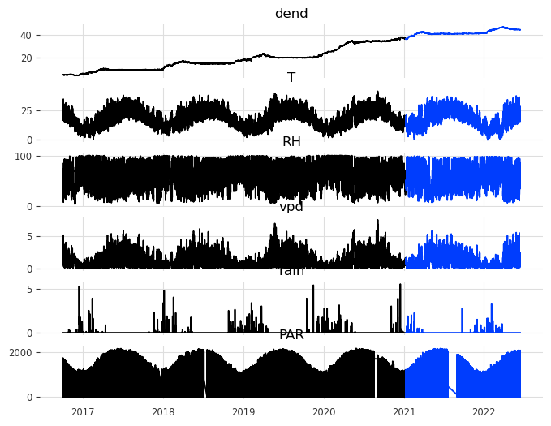

59 forecasting tutorial
We will see now a simple example of forecasting, using two simple models. The idea here is to learn the most basic concepts. Many of the advanced models would require a lot of time to cover, and this is not our goal here.
59.1 darts
We will use the darts library, which is a time series library that provides a lot of tools for forecasting.
To install it, type the following command on your terminal:
conda install -c conda-forge -c pytorch u8darts-all
How to choose the best model? Let’s take a look at the following table:
https://unit8co.github.io/darts/#forecasting-models
59.2 The data
We will work with dendrometer data. Dendrometers are instruments that measure the diameter of trees. We will forecast the diameter of a tree using the data from the dendrometer, and other atmospheric variables, such as temperature, relative humidity, rainfall and solar radiation.
load data as a dataframe
| dend | T | RH | vpd | rain | PAR | |
|---|---|---|---|---|---|---|
| time | ||||||
| 2016-10-01 00:15:00 | 4.988874 | 17.166667 | 29.666667 | 1.376667 | 0.0 | 0.000 |
| 2016-10-01 00:45:00 | 4.989843 | 17.166667 | 26.666667 | 1.433333 | 0.0 | 0.000 |
| 2016-10-01 01:15:00 | 4.989843 | 17.666667 | 23.666667 | 1.543333 | 0.0 | 0.000 |
| 2016-10-01 01:45:00 | 4.987906 | 17.533333 | 23.666667 | 1.530000 | 0.0 | 0.000 |
| 2016-10-01 02:15:00 | 4.994685 | 18.300000 | 21.333333 | 1.653333 | 0.0 | 0.000 |
| ... | ... | ... | ... | ... | ... | ... |
| 2022-06-15 10:45:00 | 44.283024 | 27.066667 | 36.666667 | 2.263333 | 0.0 | 2019.211 |
| 2022-06-15 11:15:00 | 44.276245 | 27.633333 | 37.333333 | 2.316667 | 0.0 | 2078.081 |
| 2022-06-15 11:45:00 | 44.276245 | 27.966667 | 37.000000 | 2.376667 | 0.0 | 2098.697 |
| 2022-06-15 12:15:00 | 44.273338 | 28.433333 | 38.333333 | 2.390000 | 0.0 | 2066.266 |
| 2022-06-15 12:45:00 | 44.275276 | 28.766667 | 37.000000 | 2.486667 | 0.0 | 2004.226 |
99962 rows × 6 columns
plot all columns
resample data to 1H, interpolate missing values, and convert to darts TimeSeries object
/var/folders/hg/vb3h0zd17wn6zfm9q5zk3pbw0000gn/T/ipykernel_24374/3828487745.py:2: FutureWarning: 'H' is deprecated and will be removed in a future version, please use 'h' instead.
df = df.resample('1H').mean().interpolate()<TimeSeries (DataArray) (time: 50005, component: 6, sample: 1)> Size: 2MB
array([[[4.98935890e+00],
[1.71666667e+01],
[2.81666667e+01],
[1.40500000e+00],
[0.00000000e+00],
[0.00000000e+00]],
[[4.98887491e+00],
[1.76000000e+01],
[2.36666667e+01],
[1.53666667e+00],
[0.00000000e+00],
[0.00000000e+00]],
[[4.99420071e+00],
[1.84000000e+01],
[2.11666667e+01],
[1.66666667e+00],
[0.00000000e+00],
[0.00000000e+00]],
...
[[4.42835064e+01],
[2.69000000e+01],
[3.70000000e+01],
[2.23166667e+00],
[0.00000000e+00],
[1.97888400e+03]],
[[4.42762451e+01],
[2.78000000e+01],
[3.71666667e+01],
[2.34666667e+00],
[0.00000000e+00],
[2.08838900e+03]],
[[4.42743072e+01],
[2.86000000e+01],
[3.76666667e+01],
[2.43833333e+00],
[0.00000000e+00],
[2.03524600e+03]]])
Coordinates:
* time (time) datetime64[ns] 400kB 2016-10-01 ... 2022-06-15T12:00:00
* component (component) object 48B 'dend' 'T' 'RH' 'vpd' 'rain' 'PAR'
Dimensions without coordinates: sample
Attributes:
static_covariates: None
hierarchy: NoneThe first thing is to split the dataset into a training and a validation set. We will use the first 75% of the data for training and the last 25% for validation.
Show the code
data_train, data_val = data.split_after(0.75)
data_jan_train, data_jan_val = data_jan.split_after(0.75)
data_jun_train, data_jun_val = data_jun.split_after(0.75)
df_train = data_train.pd_dataframe()
df_val = data_val.pd_dataframe()
fig, ax = plt.subplots(len(columns), 1, figsize=(8,len(columns)), sharex=True)
for i, column in enumerate(columns):
ax[i].plot(df_train[column])
ax[i].plot(df_val[column])
ax[i].set_title(column)
Because we want to forecast the diameter of the tree, we will use the dendrometer time series as the target variable, and the other variables as features.
59.3 ARIMA
Let’s train an ARIMA model first. We will use the AutoARIMA class from the darts library, which will automatically choose the best parameters (p,d,q) for the ARIMA model. Let’s train for two different months: January and June.
Show the code
AutoARIMA(add_encoders=None)| Dep. Variable: | y | No. Observations: | 540 |
| Model: | SARIMAX(2, 1, 3) | Log Likelihood | 1139.615 |
| Date: | Tue, 21 Jan 2025 | AIC | -2267.229 |
| Time: | 10:06:56 | BIC | -2241.491 |
| Sample: | 0 | HQIC | -2257.162 |
| - 540 | |||
| Covariance Type: | opg |
| coef | std err | z | P>|z| | [0.025 | 0.975] | |
| ar.L1 | 1.9141 | 0.010 | 184.718 | 0.000 | 1.894 | 1.934 |
| ar.L2 | -0.9776 | 0.010 | -95.564 | 0.000 | -0.998 | -0.958 |
| ma.L1 | -1.2687 | 0.039 | -32.875 | 0.000 | -1.344 | -1.193 |
| ma.L2 | -0.0631 | 0.054 | -1.173 | 0.241 | -0.168 | 0.042 |
| ma.L3 | 0.4285 | 0.036 | 11.744 | 0.000 | 0.357 | 0.500 |
| sigma2 | 0.0009 | 3.31e-05 | 25.793 | 0.000 | 0.001 | 0.001 |
| Ljung-Box (L1) (Q): | 0.00 | Jarque-Bera (JB): | 442.16 |
| Prob(Q): | 1.00 | Prob(JB): | 0.00 |
| Heteroskedasticity (H): | 0.48 | Skew: | -0.25 |
| Prob(H) (two-sided): | 0.00 | Kurtosis: | 7.41 |
Warnings:
[1] Covariance matrix calculated using the outer product of gradients (complex-step).
| Dep. Variable: | y | No. Observations: | 540 |
| Model: | SARIMAX(2, 1, 0) | Log Likelihood | 1705.614 |
| Date: | Tue, 21 Jan 2025 | AIC | -3405.229 |
| Time: | 10:06:57 | BIC | -3392.360 |
| Sample: | 0 | HQIC | -3400.195 |
| - 540 | |||
| Covariance Type: | opg |
| coef | std err | z | P>|z| | [0.025 | 0.975] | |
| ar.L1 | 0.8881 | 0.036 | 24.911 | 0.000 | 0.818 | 0.958 |
| ar.L2 | -0.1440 | 0.043 | -3.320 | 0.001 | -0.229 | -0.059 |
| sigma2 | 0.0001 | 4.27e-06 | 24.375 | 0.000 | 9.58e-05 | 0.000 |
| Ljung-Box (L1) (Q): | 0.03 | Jarque-Bera (JB): | 142.82 |
| Prob(Q): | 0.86 | Prob(JB): | 0.00 |
| Heteroskedasticity (H): | 0.67 | Skew: | 0.12 |
| Prob(H) (two-sided): | 0.01 | Kurtosis: | 5.51 |
Warnings:
[1] Covariance matrix calculated using the outer product of gradients (complex-step).
Show the code
fig, ax = plt.subplots(2, 1)
fig.subplots_adjust(hspace=0.5) # space out the subplots
data_jan_train['dend'].plot(label='training', ax=ax[0], color="black")
data_jan_val['dend'].plot(label='validation', ax=ax[0], color="gray")
pred_ARIMA_jan.plot(label='forecast', lw=2, ax=ax[0], color="red")
ax[0].set(xlabel="")
data_jun_train['dend'].plot(label='training', ax=ax[1], color="black")
data_jun_val['dend'].plot(label='validation', ax=ax[1], color="gray")
pred_ARIMA_jun.plot(label='forecast', lw=2, ax=ax[1], color="red")
ax[0].set(xlabel="")59.3.1 future covariates
Show the code
model_arima_jan_future = AutoARIMA()
model_arima_jun_future = AutoARIMA()
model_arima_jan_future.fit(series=data_jan_train['dend'],
future_covariates=data[['T', 'RH', 'vpd', 'rain', 'PAR']])
model_arima_jun_future.fit(series=data_jun_train['dend'],
future_covariates=data[['T', 'RH', 'vpd', 'rain', 'PAR']])AutoARIMA(add_encoders=None)Show the code
fig, ax = plt.subplots(2, 1)
data_jan_train['dend'].plot(label='training', ax=ax[0], color="black")
data_jan_val['dend'].plot(label='validation', ax=ax[0], color="gray")
pred_ARIMA_jan_future.plot(label='forecast', lw=2, ax=ax[0], color="red")
ax[0].legend()
data_jun_train['dend'].plot(label='training', ax=ax[1], color="black")
data_jun_val['dend'].plot(label='validation', ax=ax[1], color="gray")
pred_ARIMA_jun_future.plot(label='forecast', lw=2, ax=ax[1], color="red")59.4 Linear regression
The second model we will use is a linear regression. We will use the LinearRegression class from the darts library. The lags argument denotes the number of points in the past that we will use, and output_chunk_length is the number of points of the forecast.
define linear regression model and then train it (fit)
LinearRegressionModel(lags=168, lags_past_covariates=None, lags_future_covariates=None, output_chunk_length=24, output_chunk_shift=0, add_encoders=None, likelihood=None, quantiles=None, random_state=None, multi_models=True, use_static_covariates=True)It is quite easy to use the fitted model for forecasting. We just need to call the predict method, giving it the number of points n we want to forecast.
plot the actual, validation, and forecasted data
function to plot forecast with running errors
def plot_forecast_with_running_errors(
target, forecast, validation, forecast_label="Forecast", window_sizes=[24, 72, 168, 720], extra_days=20
):
"""
Plots the forecast, validation, and target series, along with running window errors for specified window sizes.
Parameters:
target (TimeSeries): The target (actual) time series.
forecast (TimeSeries): The forecasted time series.
validation (TimeSeries): The validation (true values) time series.
forecast_label (str): Label for the forecast series in the plot.
window_sizes (list of int): List of rolling window sizes (in time steps) for error calculation.
extra_days (int): Number of days to extend the x-axis limits before and after the forecast period.
"""
# Convert TimeSeries to pandas Series
forecast_pd = forecast.pd_series()
validation_pd = validation.pd_series()
target_pd = target.pd_series()
# Determine x-axis limits
forecast_start = forecast.start_time()
forecast_end = forecast.end_time()
x_min = forecast_start - pd.Timedelta(days=extra_days)
x_max = forecast_end + pd.Timedelta(days=extra_days)
# Slice target and validation data for the x-axis range
target_sliced = target_pd[x_min:x_max]
validation_sliced = validation_pd[x_min:x_max]
forcasted_sliced = forecast_pd[x_min:x_max]
# print(target_sliced)
# Compute rolling errors
errors = {}
for window in window_sizes:
errors[window] = (
abs((forcasted_sliced - validation_sliced) ** 2) # Mean Squared Error (MSE)
).rolling(window=window, min_periods=window, center=True).mean() # Rolling MSE
# Create subplots
fig, axs = plt.subplots(2, 1, figsize=(10, 6), sharex=False)
# Plot the target, validation, and forecast series
if not target_sliced.empty:
target_sliced.plot(ax=axs[0], label="Actual", alpha=0.8)
if not validation_sliced.empty:
validation_sliced.plot(ax=axs[0], label="Validation", alpha=0.8)
forecast_pd.plot(ax=axs[0], label=forecast_label, lw=2, alpha=0.8)
axs[0].legend()
axs[0].set_title("Target, Validation, and Forecast")
axs[0].set_ylabel("Values")
# axs[0].set_xlim(x_min, x_max) # Set x-axis limits
# Dynamically set optimal y-limits
combined_values = pd.concat([target_sliced, validation_sliced, forecast_pd])
if not combined_values.empty:
y_min, y_max = combined_values.min(), combined_values.max()
axs[0].set_ylim(y_min - 0.1 * (y_max - y_min), y_max + 0.1 * (y_max - y_min)) # Add 10% padding
print(errors)
# Plot running window errors
for window, error in errors.items():
print(error.max())
axs[1].plot(error, label=f"Running Error (window={window / 24:.1f} days)")
axs[1].legend()
axs[1].set_title("Running Window Errors")
axs[1].set_ylabel("Error")
axs[1].set_xlabel("Time")
# axs[1].set_xlim(x_min, x_max) # Set x-axis limits for errors as well
# plt.tight_layout()
# plt.show()plot the forecast with running errors
{24: time
2021-01-10 16:00:00 NaN
2021-01-10 17:00:00 NaN
2021-01-10 18:00:00 NaN
2021-01-10 19:00:00 NaN
2021-01-10 20:00:00 NaN
..
2021-07-16 03:00:00 NaN
2021-07-16 04:00:00 NaN
2021-07-16 05:00:00 NaN
2021-07-16 06:00:00 NaN
2021-07-16 07:00:00 NaN
Freq: h, Name: dend, Length: 4480, dtype: float64, 72: time
2021-01-10 16:00:00 NaN
2021-01-10 17:00:00 NaN
2021-01-10 18:00:00 NaN
2021-01-10 19:00:00 NaN
2021-01-10 20:00:00 NaN
..
2021-07-16 03:00:00 NaN
2021-07-16 04:00:00 NaN
2021-07-16 05:00:00 NaN
2021-07-16 06:00:00 NaN
2021-07-16 07:00:00 NaN
Freq: h, Name: dend, Length: 4480, dtype: float64, 168: time
2021-01-10 16:00:00 NaN
2021-01-10 17:00:00 NaN
2021-01-10 18:00:00 NaN
2021-01-10 19:00:00 NaN
2021-01-10 20:00:00 NaN
..
2021-07-16 03:00:00 NaN
2021-07-16 04:00:00 NaN
2021-07-16 05:00:00 NaN
2021-07-16 06:00:00 NaN
2021-07-16 07:00:00 NaN
Freq: h, Name: dend, Length: 4480, dtype: float64, 720: time
2021-01-10 16:00:00 NaN
2021-01-10 17:00:00 NaN
2021-01-10 18:00:00 NaN
2021-01-10 19:00:00 NaN
2021-01-10 20:00:00 NaN
..
2021-07-16 03:00:00 NaN
2021-07-16 04:00:00 NaN
2021-07-16 05:00:00 NaN
2021-07-16 06:00:00 NaN
2021-07-16 07:00:00 NaN
Freq: h, Name: dend, Length: 4480, dtype: float64}
17.55640685288184
16.875385240068713
16.662645369688626
15.13465863390560759.4.1 adding covariates to the model
Covariates are external variables that can help the model to make better predictions. In our case, we will use the temperature, relative humidity, rainfall, solar radiation and VPD as covariates. Also, we will use the hour, day and month as covariates.
define covariates
covariates = datetime_attribute_timeseries(data, attribute="day", one_hot=False)
covariates = covariates.stack(
datetime_attribute_timeseries(data, attribute="month", one_hot=False)
)
covariates = covariates.stack(
datetime_attribute_timeseries(data, attribute="hour", one_hot=False) # Add hour
)
covariates = covariates.stack(
data[['vpd', 'T', 'rain', 'RH', 'PAR']] # Stack additional variables
)
# Ensure all data is in float32 format
covariates = covariates.astype(np.float32)We can now define the model with covariates and train it. We will use one week (24*7 points) as the number of lags for the target variable, and the same number of lags for the covariates.
define linear regression model with covariates and then fit
LinearRegressionModel(lags=168, lags_past_covariates=168, lags_future_covariates=None, output_chunk_length=24, output_chunk_shift=0, add_encoders=None, likelihood=None, quantiles=None, random_state=None, multi_models=True, use_static_covariates=True)We can now forecast using this second model
forecast with covariates
`predict()` was called with `n > output_chunk_length`: using auto-regression to forecast the values after `output_chunk_length` points. The model will access `(n - output_chunk_length)` future values of your `past_covariates` (relative to the first predicted time step). To hide this warning, set `show_warnings=False`.plot forecast with covariates
plot forecast with running errors
{24: time
2021-01-10 16:00:00 NaN
2021-01-10 17:00:00 NaN
2021-01-10 18:00:00 NaN
2021-01-10 19:00:00 NaN
2021-01-10 20:00:00 NaN
..
2021-07-16 03:00:00 NaN
2021-07-16 04:00:00 NaN
2021-07-16 05:00:00 NaN
2021-07-16 06:00:00 NaN
2021-07-16 07:00:00 NaN
Freq: h, Name: dend, Length: 4480, dtype: float64, 72: time
2021-01-10 16:00:00 NaN
2021-01-10 17:00:00 NaN
2021-01-10 18:00:00 NaN
2021-01-10 19:00:00 NaN
2021-01-10 20:00:00 NaN
..
2021-07-16 03:00:00 NaN
2021-07-16 04:00:00 NaN
2021-07-16 05:00:00 NaN
2021-07-16 06:00:00 NaN
2021-07-16 07:00:00 NaN
Freq: h, Name: dend, Length: 4480, dtype: float64, 168: time
2021-01-10 16:00:00 NaN
2021-01-10 17:00:00 NaN
2021-01-10 18:00:00 NaN
2021-01-10 19:00:00 NaN
2021-01-10 20:00:00 NaN
..
2021-07-16 03:00:00 NaN
2021-07-16 04:00:00 NaN
2021-07-16 05:00:00 NaN
2021-07-16 06:00:00 NaN
2021-07-16 07:00:00 NaN
Freq: h, Name: dend, Length: 4480, dtype: float64, 720: time
2021-01-10 16:00:00 NaN
2021-01-10 17:00:00 NaN
2021-01-10 18:00:00 NaN
2021-01-10 19:00:00 NaN
2021-01-10 20:00:00 NaN
..
2021-07-16 03:00:00 NaN
2021-07-16 04:00:00 NaN
2021-07-16 05:00:00 NaN
2021-07-16 06:00:00 NaN
2021-07-16 07:00:00 NaN
Freq: h, Name: dend, Length: 4480, dtype: float64}
25.10769290038091
24.97024655780709
24.66439735636065
21.95628090713980659.4.2 future covariates as well
Show the code
model3 = LinearRegressionModel(
lags=24*7,
lags_past_covariates=24*7,
lags_future_covariates=list(range(0, 24*1)),
output_chunk_length=24*1
)
model3.fit(
series=target,
past_covariates=covariates,
future_covariates=covariates
)
forecast3 = model3.predict(
n=4000, # Number of time steps to predict
series=target[:], # The target series for context
past_covariates=covariates, # Past covariates required for prediction
future_covariates=covariates, # Future covariates required for prediction
)
fig, ax = plt.subplots()
target.plot(label='actual')
data_val['dend'].plot(label='validation')
forecast3.plot(label='forecast', lw=2)`predict()` was called with `n > output_chunk_length`: using auto-regression to forecast the values after `output_chunk_length` points. The model will access `(n - output_chunk_length)` future values of your `past_covariates` (relative to the first predicted time step). To hide this warning, set `show_warnings=False`.59.4.3 comparison
59.4.4 flexible prediction
We can make predictions not only of periods of time right after the training set, but actually of any period of time. Once the model has been trained, just pass to the predict method target values for the period of time you want to forecast. Regarding the covariates, you can just pass the whole time series, the algorithm will take care of selecting the right values.
Show the code
# example from the middle of the data:
forecast4 = model3.predict(
n=24*180, # Number of time steps to predict
series=target[:-5000], # The target series for context
past_covariates=covariates, # Past covariates required for prediction
future_covariates=covariates, # Future covariates required for prediction
)
plot_forecast_with_running_errors(
target=target,
forecast=forecast4,
validation=target,
forecast_label="Forecast",
window_sizes=[24 * 1, 24 * 3, 24 * 7, 24 * 30] # 1 day, 3 days, 7 days, 30 days
)`predict()` was called with `n > output_chunk_length`: using auto-regression to forecast the values after `output_chunk_length` points. The model will access `(n - output_chunk_length)` future values of your `past_covariates` (relative to the first predicted time step). To hide this warning, set `show_warnings=False`.{24: time
2020-05-27 08:00:00 NaN
2020-05-27 09:00:00 NaN
2020-05-27 10:00:00 NaN
2020-05-27 11:00:00 NaN
2020-05-27 12:00:00 NaN
..
2021-01-02 03:00:00 NaN
2021-01-02 04:00:00 NaN
2021-01-02 05:00:00 NaN
2021-01-02 06:00:00 NaN
2021-01-02 07:00:00 NaN
Freq: h, Name: dend, Length: 5280, dtype: float64, 72: time
2020-05-27 08:00:00 NaN
2020-05-27 09:00:00 NaN
2020-05-27 10:00:00 NaN
2020-05-27 11:00:00 NaN
2020-05-27 12:00:00 NaN
..
2021-01-02 03:00:00 NaN
2021-01-02 04:00:00 NaN
2021-01-02 05:00:00 NaN
2021-01-02 06:00:00 NaN
2021-01-02 07:00:00 NaN
Freq: h, Name: dend, Length: 5280, dtype: float64, 168: time
2020-05-27 08:00:00 NaN
2020-05-27 09:00:00 NaN
2020-05-27 10:00:00 NaN
2020-05-27 11:00:00 NaN
2020-05-27 12:00:00 NaN
..
2021-01-02 03:00:00 NaN
2021-01-02 04:00:00 NaN
2021-01-02 05:00:00 NaN
2021-01-02 06:00:00 NaN
2021-01-02 07:00:00 NaN
Freq: h, Name: dend, Length: 5280, dtype: float64, 720: time
2020-05-27 08:00:00 NaN
2020-05-27 09:00:00 NaN
2020-05-27 10:00:00 NaN
2020-05-27 11:00:00 NaN
2020-05-27 12:00:00 NaN
..
2021-01-02 03:00:00 NaN
2021-01-02 04:00:00 NaN
2021-01-02 05:00:00 NaN
2021-01-02 06:00:00 NaN
2021-01-02 07:00:00 NaN
Freq: h, Name: dend, Length: 5280, dtype: float64}
0.37127268506863204
0.31081648199522877
0.276350547788365
0.12890313510390475